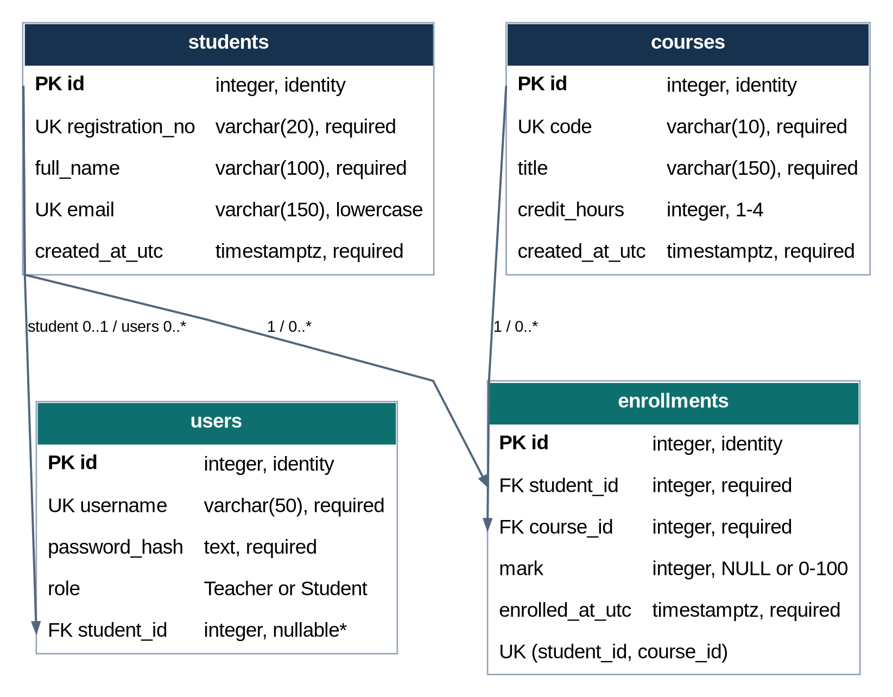
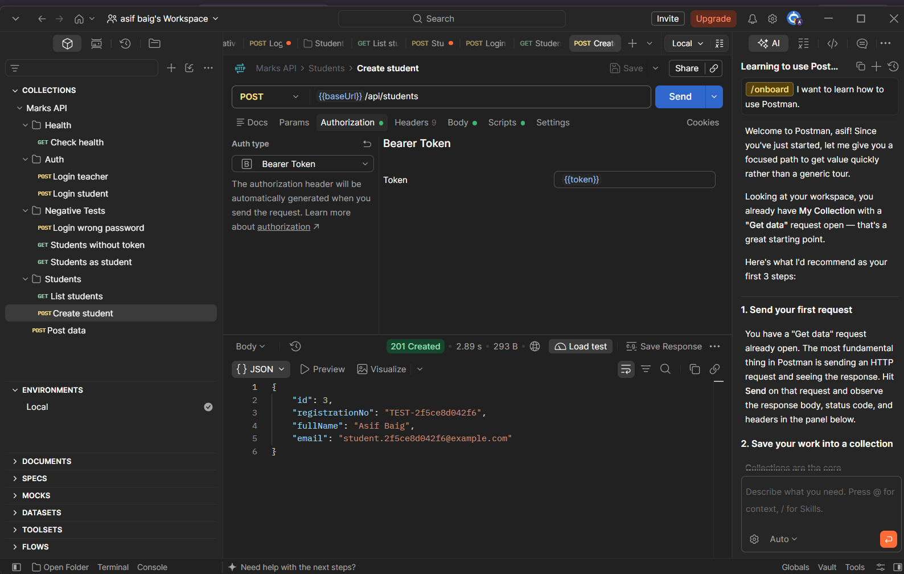
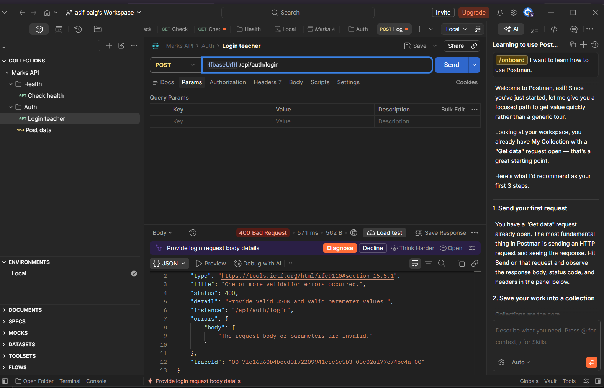
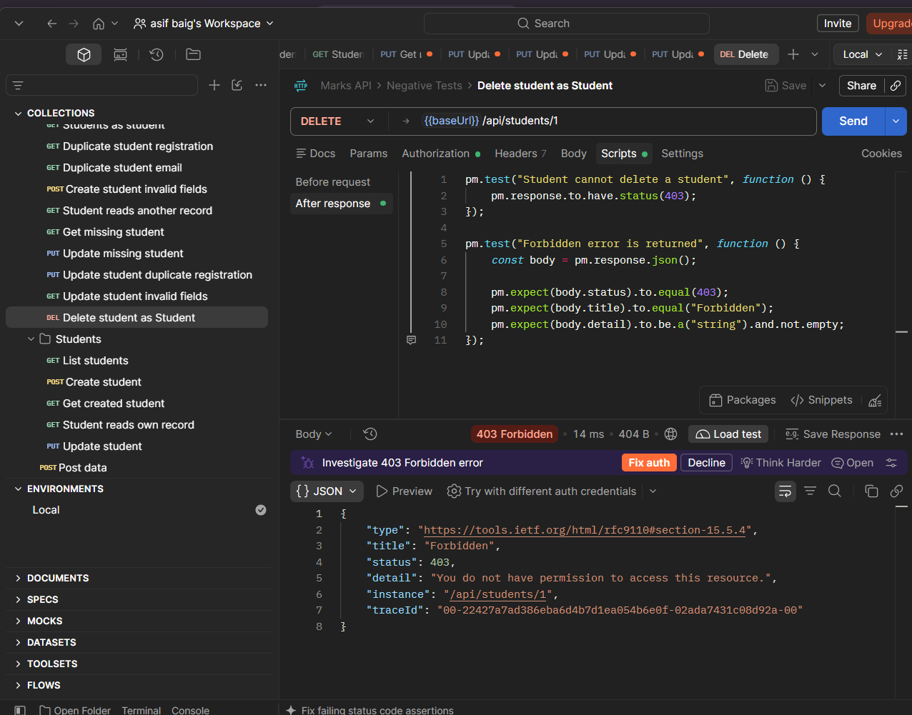
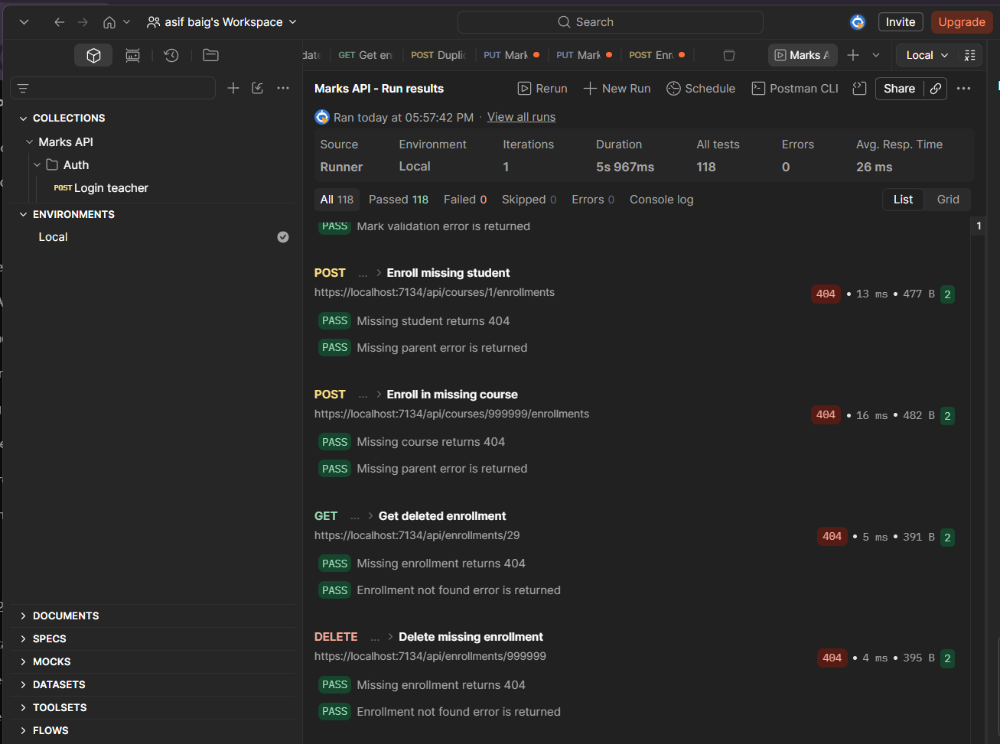

An ASP.NET Core service with PostgreSQL persistence, JWT role rules, graded reports and repeatable API testing.
Repository:
https://github.com/asifbaig7034/23F-0053_ASIF_Assignment1
JWT authentication runs before protected endpoints. Teacher policies guard writes and administration. Student access to a record or transcript checks the linked studentId claim.
.NET 10 / ASP.NET Core
PostgreSQL 17.11
EF Core + Npgsql
Swagger UI and Postman
118 / 118 Postman tests passed
107 / 107 smoke checks passed
Smoke process exit code: 0
HTTPS redirect and CORS checks passed
Responses use camelCase DTOs and UTC timestamps. Validation problems and other errors use Problem Details. Read-only queries use AsNoTracking and projections; database calls use async methods and cancellation tokens. ILogger records operations without logging passwords or JWTs.

PK = primary key; FK = foreign key; UK = unique index. Cardinalities show parent/child participation. EF's __EFMigrationsHistory table is infrastructure and is omitted.
A Student-role user must have a student link. That link is nullable for other roles. The FK index is non-unique, so the schema permits multiple accounts linked to a student.
Deleting an enrolled student/course, or a student with a linked account, returns 409.
Passwords use ASP.NET Core PasswordHasher. Signed JWTs include expiry and role claims. Development credentials and the signing key come from user-secrets; environment variables support deployment. CORS permits configured origins. HTTP redirects to HTTPS; interactive Swagger is available in Development.
NULL means ungraded and is excluded from averages. Zero is a graded mark. Empty/ungraded averages are NULL. A course passes at the configured threshold (50). CS401 marks 80 and 70 give a course average of 75.


These screenshots were captured during implementation. The original complete screenshots are included in docs/screenshots; only the relevant response areas are shown here.
401 requires valid authentication. 403 means the caller lacks permission. 404 identifies missing resources. 409 reports a conflict with existing data. Error bodies consistently contain status, title and detail.

PostgreSQL tools were located through their installation bin path. Database credentials were moved through user-secrets. Postman login scripts were corrected to keep Teacher and Student tokens separate; stale collection URLs, methods and ordering were corrected before the full passing run.
The collection contains 59 requests, 118 tests and 32 negative cases. Auth runs first; create requests save generated IDs; CRUD/enrollment cleanup precedes the final negative cases. The exported environment has blank token values.

The opt-in --smoke-test mode starts the real HTTP server, uses PostgreSQL, checks successes/errors and report edge cases, removes SMOKE-prefixed fixtures and exits 0 only on success. Development credentials come from configuration. Both recorded runs passed 107 checks.
The final helper records the clean Git revision, separate verification database, seed/cleanup row counts, two smoke results and fresh Postman evidence in docs/verification-results.json. It leaves existing application data intact.